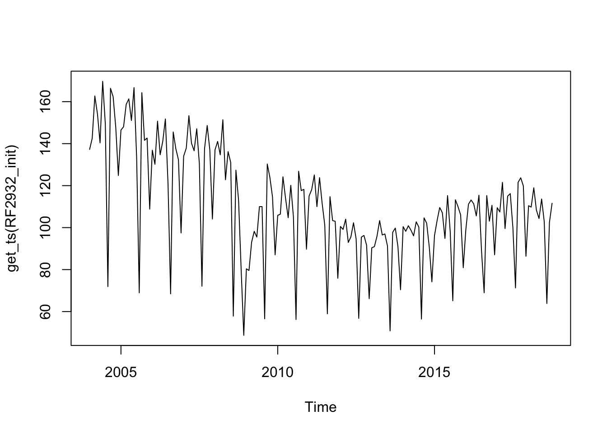

library(RJDemetra)
dir <- tempdir()
download.file("https://aqlt.github.io/formations/2021/rte/data/Etude_de_cas.zip",
file.path(dir, "Etude_de_cas.zip"))
unzip(file.path(dir, "Etude_de_cas.zip"),
exdir = dir)
u_def_var <- c("diagnostics.td-sa-last", "diagnostics.td-i-last",
"diagnostics.fcast-insample-mean", "diagnostics.fcast-outsample-mean",
"diagnostics.fcast-outsample-variance")
wk <- load_workspace(file.path(dir, "Etude_de_cas.xml"))
compute(wk)
all_models <- get_model(wk,
userdefined = u_def_var)[[1]]
all_models$RF29327 - Étude de cas
Formation - Désaisonnalisation avec JDemetra+ et RJDemetra 
L’objectif de ce TP est de faire une étude de cas spécifique pour voir des problèmes possibles et une proposition de solution
Disclaimer : il peut exister plusieurs solutions, celles données dans ce TP ne sont que des propositions qui peuvent être discuté.
Pour télécharger le workspace, cliquer ici et dézipper le fichier. Pour importer les séries depuis R, vous pouvez par exemple utiliser le code suivant :
Pré-ajustement
Série RF2932
Il y a un problème d’hétéroscédasticité (au seuil de 1 %) et un léger problème de non-normalité (au seuil de 1 %).
Indice
Que pensez-vous du schéma de décomposition ?
Solution
Décision : forcer le schéma en multiplicatif.
Solution sous R :
Solution
RF2932_init <- x13(get_ts(all_models$RF2932),
x13_spec(all_models$RF2932),
userdefined = c("diagnostics.levelstat",
"diagnostics.logstat"))
# avec modèle airline, le modèle additif est meilleur en terme d'aicc
c(RF2932_init$user_defined) $diagnostics.levelstat
[1] 1107.123
$diagnostics.logstat
[1] 1118.317RF2932_init$regarima$residuals.stat$st.error
[1] 6.357559
$tests
[1mNormality[22m
Statistic P.value
mean -0.3191819 0.7500 ***
skewness 0.0654232 0.7315 ***
kurtosis 3.8008702 0.0357
Signif. codes: H0 (normality of residuals) is not rejected at
significance levels: 0.1 ***0.05 **
[1mIndependence[22m
Statistic P.value
ljung box 27.5414156 0.1914 ***
ljung box (residuals at seasonal lags) 0.0000204 1.0000 ***
Signif. codes: H0 (independence of residuals) is not rejected at
significance levels: 0.1 ***0.05 **
[1mLinearity[22m
Statistic P.value
ljung box (squared residuals) 42.8148107 0.0050
Signif. codes: H0 (no conditional heteroscedasticity of residuals) is not rejected at
significance levels: 0.1 ***0.05 **summary(RF2932_init$regarima)y = regression model + arima (1, 1, 0, 0, 1, 1)
Model: RegARIMA - X13
Estimation span: from 1-2004 to 10-2018
Log-transformation: no
Regression model: no mean, trading days effect(1), no leap year effect, no Easter effect, outliers(1)
Coefficients:
ARIMA:
Estimate Std. Error T-stat Pr(>|t|)
Phi(1) 0.32715 0.07446 4.394 1.99e-05 ***
BTheta(1) -0.42117 0.06825 -6.171 5.07e-09 ***
---
Signif. codes: 0 '***' 0.001 '**' 0.01 '*' 0.05 '.' 0.1 ' ' 1
Regression model:
Estimate Std. Error T-stat Pr(>|t|)
Semaine 2.5398 0.2233 11.374 < 2e-16 ***
LS (11-2008) -23.0820 5.1897 -4.448 1.59e-05 ***
---
Signif. codes: 0 '***' 0.001 '**' 0.01 '*' 0.05 '.' 0.1 ' ' 1
Residual standard error: 6.358 on 160 degrees of freedom
Log likelihood = -540.5, aic = 1091, aicc = 1091, bic(corrected for length) = 3.823plot(get_ts(RF2932_init)) # schéma parait plutôt multiplicatif
RF2932 <- x13(get_ts(RF2932_init),
x13_spec(RF2932_init,
transform.function = "Log"))
# critères d'information plus petits avec le modèle ARIMA final
summary(RF2932$regarima) y = regression model + arima (1, 1, 0, 0, 1, 1)
Model: RegARIMA - X13
Estimation span: from 1-2004 to 10-2018
Log-transformation: yes
Regression model: no mean, trading days effect(1), no leap year effect, no Easter effect, outliers(2)
Coefficients:
ARIMA:
Estimate Std. Error T-stat Pr(>|t|)
Phi(1) 0.28605 0.07630 3.749 0.000245 ***
BTheta(1) -0.50935 0.06852 -7.434 5.44e-12 ***
---
Signif. codes: 0 '***' 0.001 '**' 0.01 '*' 0.05 '.' 0.1 ' ' 1
Regression model:
Estimate Std. Error T-stat Pr(>|t|)
Semaine 0.024030 0.001803 13.328 < 2e-16 ***
AO (12-2008) -0.281493 0.036673 -7.676 1.37e-12 ***
LS (11-2008) -0.236169 0.044617 -5.293 3.78e-07 ***
---
Signif. codes: 0 '***' 0.001 '**' 0.01 '*' 0.05 '.' 0.1 ' ' 1
Residual standard error: 0.05084 on 159 degrees of freedom
Log likelihood = 255.6, aic = 1037, aicc = 1038, bic(corrected for length) = -5.804RF2932$regarima$residuals.stat$st.error
[1] 0.05083682
$tests
[1mNormality[22m
Statistic P.value
mean -0.261613 0.7939 ***
skewness 0.255684 0.1800 ***
kurtosis 2.963556 0.9239 ***
Signif. codes: H0 (normality of residuals) is not rejected at
significance levels: 0.1 ***0.05 **
[1mIndependence[22m
Statistic P.value
ljung box 27.498876 0.1929 ***
ljung box (residuals at seasonal lags) 0.001761 0.9991 ***
Signif. codes: H0 (independence of residuals) is not rejected at
significance levels: 0.1 ***0.05 **
[1mLinearity[22m
Statistic P.value
ljung box (squared residuals) 25.323509 0.2819 ***
Signif. codes: H0 (no conditional heteroscedasticity of residuals) is not rejected at
significance levels: 0.1 ***0.05 **Série RF2813
L’analyse de cette série nécessite d’avoir vu les statistiques M qui jugent la qualité de la décomposition.
Il y a un problème d’autocorrélation des résidus (au seuil de 1 %) et une mauvaise décomposition (Q-M2).
Indice
Que pensez-vous des outliers détectés ?
Solution
Le problème d’autocorrélation peut être atténué en forçant le schéma additif (p-valeur du test est alors égale à 0,04).
La mauvaise décomposition vient du fait que la tendance est plate et donc que la composante irrégulière est plus variable que la composante tendance-cycle.
Décision : forcer le schéma en additif.
Série RF2223
Il y a un effet JO résiduel (au seuil de 5 % mais pas 1 %) et un problème d’hétéroscédasticité (au seuil de 5 % mais pas 1 %).
Indice
Réduire le seuil de détection des outliers pour voir ce qu’il se passe.
Solution
Décision : Ajouter deux AO en 8-2007 et 7-2009.
Il est préférable de rajouter les outliers à la main plutôt que de modifier de manière permanente le seuil de détection des outliers : cela évitera, pour les futures révisions du modèle,de détecter trop d’outliers.
Solution sous R :
Solution
RF2223_init <- all_models$RF2223
RF2223_init$regarima$residuals.stat$st.error
[1] 4.832668
$tests
[1mNormality[22m
Statistic P.value
mean 0.05142 0.9591 ***
skewness 0.12583 0.5093 ***
kurtosis 3.32112 0.3998 ***
Signif. codes: H0 (normality of residuals) is not rejected at
significance levels: 0.1 ***0.05 **
[1mIndependence[22m
Statistic P.value
ljung box 21.21835 0.5073 ***
ljung box (residuals at seasonal lags) 2.79637 0.2470 ***
Signif. codes: H0 (independence of residuals) is not rejected at
significance levels: 0.1 ***0.05 **
[1mLinearity[22m
Statistic P.value
ljung box (squared residuals) 34.60244 0.0426
Signif. codes: H0 (no conditional heteroscedasticity of residuals) is not rejected at
significance levels: 0.1 ***0.05 **summary(RF2223_init$regarima)y = regression model + arima (0, 1, 1, 0, 1, 1)
Model: RegARIMA - X13
Estimation span: from 1-2004 to 10-2018
Log-transformation: no
Regression model: no mean, trading days effect(1), no leap year effect, no Easter effect, no outliers
Coefficients:
ARIMA:
Estimate Std. Error T-stat Pr(>|t|)
Theta(1) -0.55547 0.06552 -8.478 1.24e-14 ***
BTheta(1) -0.60519 0.06176 -9.799 < 2e-16 ***
---
Signif. codes: 0 '***' 0.001 '**' 0.01 '*' 0.05 '.' 0.1 ' ' 1
Regression model:
Estimate Std. Error T-stat Pr(>|t|)
Semaine 2.9836 0.2012 14.83 <2e-16 ***
---
Signif. codes: 0 '***' 0.001 '**' 0.01 '*' 0.05 '.' 0.1 ' ' 1
Residual standard error: 4.833 on 161 degrees of freedom
Log likelihood = -497, aic = 1002, aicc = 1002, bic(corrected for length) = 3.244# Pas d'effet JO résiduel sur l'ensemble de la série
RF2223_init$diagnostics[1m Relative contribution of the components to the stationary
portion of the variance in the original series,
after the removal of the long term trend [22m
Trend computed by Hodrick-Prescott filter (cycle length = 8.0 years)
Component
Cycle 4.360
Seasonal 93.060
Irregular 1.509
TD & Hol. 3.167
Others 0.000
Total 102.096
[1m Combined test in the entire series [22m
Non parametric tests for stable seasonality
P.value
Kruskall-Wallis test 0.000
Test for the presence of seasonality assuming stability 0.000
Evolutive seasonality test 0.863
Identifiable seasonality present
[1m Residual seasonality tests [22m
P.value
qs test on sa 1.000
qs test on i 1.000
f-test on sa (seasonal dummies) 0.998
f-test on i (seasonal dummies) 0.974
Residual seasonality (entire series) 0.997
Residual seasonality (last 3 years) 0.951
f-test on sa (td) 0.393
f-test on i (td) 0.228# Mais effet JO résiduel si test sur 8 dernières années
c(RF2223_init$user_defined)$`diagnostics.td-sa-last`
[1] 2.27703311 0.04330548
attr(,"description")
[1] "F with 6 degrees of freedom in the nominator and 88 degrees of freedom in the denominator"
$`diagnostics.td-i-last`
[1] 1.7146908 0.1268881
attr(,"description")
[1] "F with 6 degrees of freedom in the nominator and 88 degrees of freedom in the denominator"
$`diagnostics.fcast-insample-mean`
[1] 0.07557263 0.93986257
attr(,"description")
[1] "T with 146 degrees of freedom"
$`diagnostics.fcast-outsample-mean`
[1] -0.05393521 0.95706052
attr(,"description")
[1] "T with 146 degrees of freedom"
$`diagnostics.fcast-outsample-variance`
[1] 0.3837777 0.9891418
attr(,"description")
[1] "F with 18 degrees of freedom in the nominator and 147 degrees of freedom in the denominator"RF2223 <- x13(get_ts(RF2223_init),
x13_spec(RF2223_init,
outlier.usedefcv = FALSE,
outlier.cv = 2.8),
userdefined = u_def_var)
summary(RF2223$regarima)y = regression model + arima (0, 1, 1, 0, 1, 1)
Model: RegARIMA - X13
Estimation span: from 1-2004 to 10-2018
Log-transformation: no
Regression model: no mean, trading days effect(1), no leap year effect, no Easter effect, outliers(2)
Coefficients:
ARIMA:
Estimate Std. Error T-stat Pr(>|t|)
Theta(1) -0.53904 0.06677 -8.074 1.35e-13 ***
BTheta(1) -0.58038 0.06321 -9.181 2.22e-16 ***
---
Signif. codes: 0 '***' 0.001 '**' 0.01 '*' 0.05 '.' 0.1 ' ' 1
Regression model:
Estimate Std. Error T-stat Pr(>|t|)
Semaine 2.9411 0.1915 15.354 < 2e-16 ***
AO (7-2009) -12.8787 3.6192 -3.558 0.000487 ***
AO (4-2008) 10.6107 3.6656 2.895 0.004309 **
---
Signif. codes: 0 '***' 0.001 '**' 0.01 '*' 0.05 '.' 0.1 ' ' 1
Residual standard error: 4.554 on 159 degrees of freedom
Log likelihood = -486.9, aic = 985.8, aicc = 986.3, bic(corrected for length) = 3.187# Plus d'effet résiduel
c(RF2223$user_defined)$`diagnostics.td-sa-last`
[1] 2.10576592 0.06043949
attr(,"description")
[1] "F with 6 degrees of freedom in the nominator and 88 degrees of freedom in the denominator"
$`diagnostics.td-i-last`
[1] 1.6042176 0.1554087
attr(,"description")
[1] "F with 6 degrees of freedom in the nominator and 88 degrees of freedom in the denominator"
$`diagnostics.fcast-insample-mean`
[1] 0.1021795 0.9187544
attr(,"description")
[1] "T with 146 degrees of freedom"
$`diagnostics.fcast-outsample-mean`
[1] -0.1043920 0.9170015
attr(,"description")
[1] "T with 146 degrees of freedom"
$`diagnostics.fcast-outsample-variance`
[1] 0.4375446 0.9773708
attr(,"description")
[1] "F with 18 degrees of freedom in the nominator and 147 degrees of freedom in the denominator"# Pour rajouter les outliers à la main
RF2223 <- x13(get_ts(RF2223_init),
x13_spec(RF2223_init,
usrdef.outliersEnabled = TRUE,
usrdef.outliersType = c("AO", "AO"),
usrdef.outliersDate = c("2008-04-01", "2009-07-01")),
userdefined = u_def_var)
summary(RF2223$regarima)y = regression model + arima (0, 1, 1, 0, 1, 1)
Model: RegARIMA - X13
Estimation span: from 1-2004 to 10-2018
Log-transformation: no
Regression model: no mean, trading days effect(1), no leap year effect, no Easter effect, outliers(2)
Coefficients:
ARIMA:
Estimate Std. Error T-stat Pr(>|t|)
Theta(1) -0.53904 0.06677 -8.074 1.35e-13 ***
BTheta(1) -0.58038 0.06321 -9.181 2.22e-16 ***
---
Signif. codes: 0 '***' 0.001 '**' 0.01 '*' 0.05 '.' 0.1 ' ' 1
Regression model:
Estimate Std. Error T-stat Pr(>|t|)
Semaine 2.9411 0.1915 15.354 < 2e-16 ***
AO (4-2008) 10.6107 3.6656 2.895 0.004309 **
AO (7-2009) -12.8787 3.6192 -3.558 0.000487 ***
---
Signif. codes: 0 '***' 0.001 '**' 0.01 '*' 0.05 '.' 0.1 ' ' 1
Residual standard error: 4.554 on 159 degrees of freedom
Log likelihood = -486.9, aic = 985.8, aicc = 986.3, bic(corrected for length) = 3.187Série RF2453 : TC or not TC
Il y a un effet JO résiduel (au seuil de 1 %).
Indice
Que pensez-vous des outliers détectés ?
Solution
Supprimer la détection des TC permet de corriger le problème sur l’irrégulier mais pas sur la série désaisonnalisée.
Décision : désactiver la détection automatique de TC.
Solution sous R :
Solution
RF2453_init <- all_models$RF2453
RF2453_init$regarima$residuals.stat$st.error
[1] 6.241587
$tests
[1mNormality[22m
Statistic P.value
mean -0.1815 0.8562 ***
skewness 0.1955 0.3054 ***
kurtosis 3.4186 0.2724 ***
Signif. codes: H0 (normality of residuals) is not rejected at
significance levels: 0.1 ***0.05 **
[1mIndependence[22m
Statistic P.value
ljung box 21.7413 0.4754 ***
ljung box (residuals at seasonal lags) 0.2928 0.8638 ***
Signif. codes: H0 (independence of residuals) is not rejected at
significance levels: 0.1 ***0.05 **
[1mLinearity[22m
Statistic P.value
ljung box (squared residuals) 27.3760 0.1973 ***
Signif. codes: H0 (no conditional heteroscedasticity of residuals) is not rejected at
significance levels: 0.1 ***0.05 **# Pas d'effet JO résiduel sur l'ensemble de la série
RF2453_init$diagnostics[1m Relative contribution of the components to the stationary
portion of the variance in the original series,
after the removal of the long term trend [22m
Trend computed by Hodrick-Prescott filter (cycle length = 8.0 years)
Component
Cycle 4.723
Seasonal 67.834
Irregular 1.409
TD & Hol. 2.177
Others 26.445
Total 102.587
[1m Combined test in the entire series [22m
Non parametric tests for stable seasonality
P.value
Kruskall-Wallis test 0.000
Test for the presence of seasonality assuming stability 0.000
Evolutive seasonality test 0.023
Identifiable seasonality present
[1m Residual seasonality tests [22m
P.value
qs test on sa 1.000
qs test on i 1.000
f-test on sa (seasonal dummies) 0.950
f-test on i (seasonal dummies) 0.766
Residual seasonality (entire series) 0.873
Residual seasonality (last 3 years) 0.865
f-test on sa (td) 0.111
f-test on i (td) 0.126# Mais effet JO résiduel si test sur 8 dernières années
c(RF2453_init$user_defined)$`diagnostics.td-sa-last`
[1] 4.08882336 0.00115262
attr(,"description")
[1] "F with 6 degrees of freedom in the nominator and 88 degrees of freedom in the denominator"
$`diagnostics.td-i-last`
[1] 2.30323517 0.04113822
attr(,"description")
[1] "F with 6 degrees of freedom in the nominator and 88 degrees of freedom in the denominator"
$`diagnostics.fcast-insample-mean`
[1] -0.1593649 0.8736017
attr(,"description")
[1] "T with 146 degrees of freedom"
$`diagnostics.fcast-outsample-mean`
[1] -0.06024667 0.95204157
attr(,"description")
[1] "T with 146 degrees of freedom"
$`diagnostics.fcast-outsample-variance`
[1] 0.8067789 0.6900112
attr(,"description")
[1] "F with 18 degrees of freedom in the nominator and 147 degrees of freedom in the denominator"# Beaucoup de TC qui se suivent
summary(RF2453_init$regarima)y = regression model + arima (0, 1, 1, 0, 1, 1)
Model: RegARIMA - X13
Estimation span: from 1-2004 to 10-2018
Log-transformation: no
Regression model: no mean, trading days effect(5), no leap year effect, no Easter effect, outliers(4)
Coefficients:
ARIMA:
Estimate Std. Error T-stat Pr(>|t|)
Theta(1) -0.47971 0.07151 -6.708 3.00e-10 ***
BTheta(1) -0.47189 0.07333 -6.435 1.29e-09 ***
---
Signif. codes: 0 '***' 0.001 '**' 0.01 '*' 0.05 '.' 0.1 ' ' 1
Regression model:
Estimate Std. Error T-stat Pr(>|t|)
Lundi 1.3390 0.6446 2.077 0.0393 *
Mardi 3.8152 0.6722 5.676 6.08e-08 ***
Mercredi 2.8567 0.7156 3.992 9.85e-05 ***
Jeudi 3.5577 0.6930 5.134 7.91e-07 ***
Vendredi 1.4752 0.6674 2.210 0.0285 *
LS (10-2008) -26.6687 5.0893 -5.240 4.85e-07 ***
TC (12-2008) -25.6542 5.3565 -4.789 3.70e-06 ***
TC (2-2009) -23.6203 5.1172 -4.616 7.83e-06 ***
TC (8-2009) 20.5306 5.0996 4.026 8.63e-05 ***
---
Signif. codes: 0 '***' 0.001 '**' 0.01 '*' 0.05 '.' 0.1 ' ' 1
Residual standard error: 6.242 on 153 degrees of freedom
Log likelihood = -537.9, aic = 1100, aicc = 1102, bic(corrected for length) = 4.003# Pour rajouter les outliers à la main
RF2453 <- x13(get_ts(RF2453_init),
x13_spec(RF2453_init,
outlier.tc = FALSE),
userdefined = u_def_var)
summary(RF2453$regarima)y = regression model + arima (0, 1, 1, 0, 1, 1)
Model: RegARIMA - X13
Estimation span: from 1-2004 to 10-2018
Log-transformation: no
Regression model: no mean, trading days effect(5), no leap year effect, no Easter effect, outliers(3)
Coefficients:
ARIMA:
Estimate Std. Error T-stat Pr(>|t|)
Theta(1) -0.46988 0.07192 -6.534 7.63e-10 ***
BTheta(1) -0.52141 0.07201 -7.241 1.61e-11 ***
---
Signif. codes: 0 '***' 0.001 '**' 0.01 '*' 0.05 '.' 0.1 ' ' 1
Regression model:
Estimate Std. Error T-stat Pr(>|t|)
Lundi 1.3860 0.6935 1.999 0.047291 *
Mardi 3.4958 0.7243 4.826 3.15e-06 ***
Mercredi 3.0510 0.7672 3.977 0.000104 ***
Jeudi 3.4873 0.7332 4.756 4.28e-06 ***
Vendredi 1.6673 0.7111 2.345 0.020230 *
LS (10-2008) -25.4297 5.5004 -4.623 7.59e-06 ***
LS (8-2009) 23.8545 5.2981 4.502 1.26e-05 ***
LS (12-2008) -22.0810 5.5245 -3.997 9.66e-05 ***
---
Signif. codes: 0 '***' 0.001 '**' 0.01 '*' 0.05 '.' 0.1 ' ' 1
Residual standard error: 6.623 on 154 degrees of freedom
Log likelihood = -548.1, aic = 1118, aicc = 1120, bic(corrected for length) = 4.091c(RF2453$user_defined)$`diagnostics.td-sa-last`
[1] 3.617642975 0.002968356
attr(,"description")
[1] "F with 6 degrees of freedom in the nominator and 88 degrees of freedom in the denominator"
$`diagnostics.td-i-last`
[1] 2.13370757 0.05725657
attr(,"description")
[1] "F with 6 degrees of freedom in the nominator and 88 degrees of freedom in the denominator"
$`diagnostics.fcast-insample-mean`
[1] -0.1399766 0.8888714
attr(,"description")
[1] "T with 146 degrees of freedom"
$`diagnostics.fcast-outsample-mean`
[1] -0.07115003 0.94337572
attr(,"description")
[1] "T with 146 degrees of freedom"
$`diagnostics.fcast-outsample-variance`
[1] 0.7524495 0.7517122
attr(,"description")
[1] "F with 18 degrees of freedom in the nominator and 147 degrees of freedom in the denominator"S-I Ratio
Série RF1101
Exercice
Analyser les S-I ratios et le graphique yearly components de la série brute : que remarquez vous ?
Solution
Pour cette série, le modèle est estimé depuis 2004 mais les CVS-CJO ne sont mises à jour qu’à partir de 2012.
Il y a une nette rupture de saisonnalité en 2008 qui n’affecte pas la période après 2012 (filtre M3X5 utilisé, soit pour l’estimation des coefficients saisonniers de l’année A utilise les moyennes de l’année A-3 à A+3). Ainsi, commencer l’estimation du modèle à partir de 2008 permet d’avoir un modèle de pré-ajustement mieux estimé sur le présent et la rupture de saisonnalité n’affectera pas les coefficients publiés.
Une autre solution est de rajouter un seasonal outlier en août 2008
Saisonnalité résiduelle
Série RF2561
Il y a de la saisonnalité résiduelle et une mauvaise qualité des résidus du modèle RegARIMA.
Indice
Analyser la série sur la fin de la période pour voir d’où vient la saisonnalité résiduelle. Comment pourrait-on la corriger ? Est-ce qu’il s’agit d’une rupture brute ou progressive ?
Solution
Une rupture de saisonnalité s’observe en juin 2011 : avant cette date juin était un point haut alors qu’à partir de 2011 il est au même niveau que les mois de mai et juillet. Ajout un SO à cette date corrige la rupture mais laisse une saisonnalité résiduelle qui vient du mois de décembre : on observe sur la série désaisonnalisée des pics systématiques en décembre sur les dernières années. Cette fois-ci ce n’est pas une rupture brute de la saisonnalité : le point de décembre qui était également un point haut avant 2011 devient progressivement de plus en plus bas. Le MSR de décembre (à 0,77) est d’ailleurs bien plus bas que celui des autres mois (qui sont autour de 2) ce qui suggère de prendre un filtre saisonnier plus court en décembre (le filtre actuellement choisi est M3X3). La mauvaise qualité des résidus est difficilement corrigeable, il faudrait prendre une période d’estimation beaucoup plus courtes qui ajouterait donc une instabilité des estimations. Décision : rajouter un SO en juin 2011 et utiliser le filtre M3X1 pour le mois de décembre. Pas d’intervention pour corriger la qualité des résidus.
Série RF2530 :
Il y a de la saisonnalité résiduelle (au seuil de 1 %), de l’hétéroscédasticité des résidus (au seuil de 5 %), une mauvaise décomposition (q-m2) et un problème sur la moyenne des erreurs de prévision (au seuil de 5 %).
Indice
Analyser correctement le problème de saisonnalité résiduelle.
Solution
On remarque entre juillet et août 2009 un changement de saisonnalité : ajouter un pure seasonal outlier (PSO) entre juillet et août 2009 permet de corriger la saisonnalité résiduelle, l’hétéroscédasticité mais pas la mauvaise décomposition et le problème sur la moyenne des erreurs de prévision.
Solution sous R :
# Il faut créer le PSO :
pso <- function(date_rupture1,
date_rupture2,
date_deb = 1990, date_fin = 2030, frequence = 12){
x <- ts(0,start=date_deb,end=date_fin,
frequency = frequence)
per_rupture1 <- as.numeric(cycle(window(x,start=date_rupture1,end=date_rupture1)))
per_rupture2 <- as.numeric(cycle(window(x,start=date_rupture2,end=date_rupture2)))
x[(cycle(x) == per_rupture1) & (time(x) < date_rupture1)] <- 1
x[(cycle(x) == per_rupture2) & (time(x) < date_rupture2)] <- -1
x
}
pso_juil_aout2009 <- pso(2009+(7-1)/12,
2009+(8-1)/12)
plot(pso_juil_aout2009)RF2530 <- all_models$RF2530
c(RF2530$user_defined)$`diagnostics.td-sa-last`
[1] 1.3937951 0.2260685
attr(,"description")
[1] "F with 6 degrees of freedom in the nominator and 88 degrees of freedom in the denominator"
$`diagnostics.td-i-last`
[1] 0.9615718 0.4560279
attr(,"description")
[1] "F with 6 degrees of freedom in the nominator and 88 degrees of freedom in the denominator"
$`diagnostics.fcast-insample-mean`
[1] -0.001473487 0.998826339
attr(,"description")
[1] "T with 146 degrees of freedom"
$`diagnostics.fcast-outsample-mean`
[1] -2.39348894 0.01795943
attr(,"description")
[1] "T with 146 degrees of freedom"
$`diagnostics.fcast-outsample-variance`
[1] 1.4525592 0.1157818
attr(,"description")
[1] "F with 18 degrees of freedom in the nominator and 147 degrees of freedom in the denominator"RF2530 <- x13(get_ts(RF2530),
x13_spec(RF2530,
usrdef.varEnabled = TRUE,
usrdef.var = pso_juil_aout2009,
usrdef.varType = "Seasonal"
),
userdefined = u_def_var)
c(RF2530$user_defined)$`diagnostics.td-sa-last`
[1] 2.77575446 0.01612013
attr(,"description")
[1] "F with 6 degrees of freedom in the nominator and 88 degrees of freedom in the denominator"
$`diagnostics.td-i-last`
[1] 1.8370673 0.1009677
attr(,"description")
[1] "F with 6 degrees of freedom in the nominator and 88 degrees of freedom in the denominator"
$`diagnostics.fcast-insample-mean`
[1] 1.0196171 0.3095967
attr(,"description")
[1] "T with 146 degrees of freedom"
$`diagnostics.fcast-outsample-mean`
[1] -1.86986419 0.06350511
attr(,"description")
[1] "T with 146 degrees of freedom"
$`diagnostics.fcast-outsample-variance`
[1] 1.2460664 0.2326639
attr(,"description")
[1] "F with 18 degrees of freedom in the nominator and 147 degrees of freedom in the denominator"Série RF3299
Il y a de la saisonnalité résiduelle.
Indice
Analyser correctement le problème de saisonnalité résiduelle.
Solution
Ajouter des SO en 10-2012 et 12-2015.
Séries C4672
Exercice
Dans cet exercice il y a deux séries à étudier : la série C4672 depuis 1999 et la même série mais estimée à partir de 2005.
Commencez par la série qui commence en 1999. Comment vous parait le modèle ?
Analyser le modèle de la série qui commence en 2005 et comparer les résultats.
Saisonnalité résiduelle non détectée pour modèle ensemble mais détectée si modèle coupé à partir de 2005.
Solution
Ajouter un SO 11-2008.
Série C4773
Saisonnalité résiduelle détectée.
Indice
Étudier les S-I ratio : la saisonnalité est-elle stable ?
Solution
On observe une saisonnalité plutôt stable sauf en juillet et août (étude des S-I ratio). Les S-I ratio montrent aussi en juillet et août un comportement « atypique » de l’irrégulier en début de période. On n’observe pas de changement brusque de saisonnalité. L’étude des MSR par mois suggère de prendre un filtre plus court en juillet et en août : cela permet de corriger la saisonnalité résiduelle.